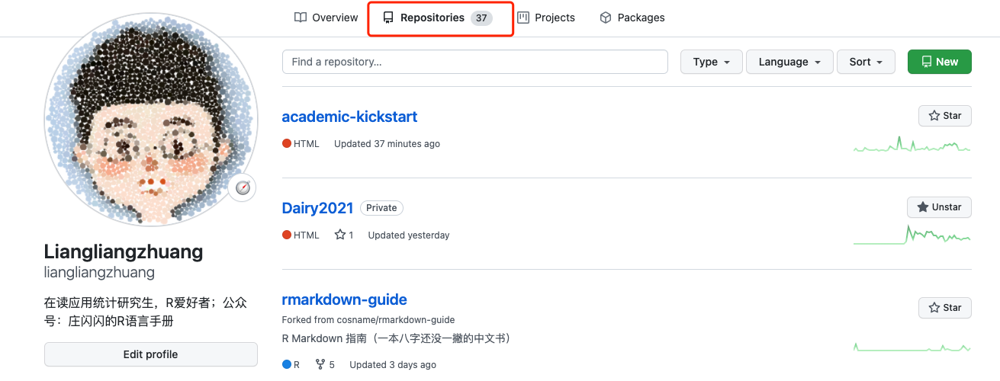

第一次测试
希望没问题
中文没问题
图片没问题

x = 1:10
x## [1] 1 2 3 4 5 6 7 8 9 10plot(x)
library(ggplot2)
df <- data.frame(
gp = factor(rep(letters[1:3], each = 10)),
y = rnorm(30)
)
ds <- do.call(rbind, lapply(split(df, df$gp), function(d) {
data.frame(mean = mean(d$y), sd = sd(d$y), gp = d$gp)
}))
# The summary data frame ds is used to plot larger red points on top
# of the raw data. Note that we don't need to supply `data` or `mapping`
# in each layer because the defaults from ggplot() are used.
ggplot(df, aes(gp, y)) +
geom_point() +
geom_point(data = ds, aes(y = mean), colour = 'red', size = 3)
R结果有问题 输出不了